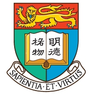
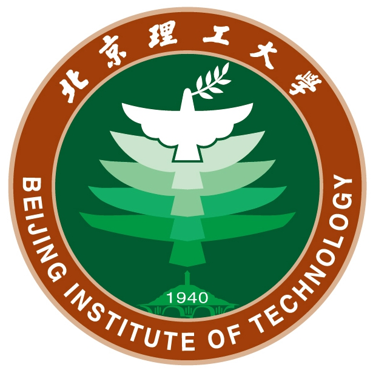

Ph.D Student, |
Currently I am a third-year Ph.D student in the Department of Electrical and Electronic Engineering, The University of Hong Kong (HKU).
Before that, I got my B.S. degree in automation from the School of Xuteli, Beijing Institute of Technology (BIT) in June 2019.
Research Interests: Computational Imaging, Phase Retrieval, Optimization.
|  | Ph.D student, The University of Hong Kong, Hong Kong, China [2019.9 ~ current]
|
|  | B. S, Beijing Institute of Technology, Beijing, China [2015.9 ~ 2019.7]
|
Iterative phase retrieval with a sensor mask
Li Song and Edmund Y Lam
Optics Express, vol. 30, no. 14, pp. 25788–25802, July 2022. [JCR Q2, IF = 3.833]
Dual Alternating Direction Method of Multipliers for Inverse Imaging
Li Song, Zhou Ge and Edmund Y Lam
IEEE Transactions on Image Processing, vol. 31, pp. 3295–3308, April 2022. [JCR Q1, IF = 11.041]
Fast and robust phase retrieval for masked coherent diffractive imaging
Li Song and Edmund Y Lam
Photonics Research, vol. 10, no. 3, pp. 758–768, March 2022. [JCR Q1, IF = 7.254]
Dynamic laser speckle analysis using the event sensor
Zhou Ge, Nan Meng, Li Song, Edmund Y Lam
Applied Optics, vol. 60, no. 1, pp. 172–178, January 2021. [JCR Q3, Editors' Pick, IF = 1.905]
Phase retrieval with data-driven dual alternating direction method of multipliers for coherent diffraction imaging
Li Song and Edmund Y Lam
in OSA Topical Meeting in Novel Techniques in Microscopy, pp. NTu1C.2, April 2021.
MBD-GAN: Model-based image deblurring with a generative adversarial network
Li Song and Edmund Y Lam
in International Conference on Pattern Recognition, pp. 7306–7313, January 2021. [CCF C]
Light field image restoration in low-light environment
Zhou Ge, Li Song, Edmund Y Lam
in SPIE Future Sensing Technologies, volume 11525 of Proceedings of the SPIE, pp. 115251H, November 2020.
An Embedded Tracking System for Living Human Face
Hongbin Ma, Li Song and Shiqi Li
China Invention Patent, Publication Patent Number: CN108764126B
First Prize of China Undergraduate Mathematical Contest in Modeling, Beijing
First Prize of 5th BIT Mathematical Analysis Invitational Tournament
First Prize of China Undergraduate Mathematical Contest (non-math major)
Second Prize of National English Competition for College Students
Diwen Scholarship, BIT